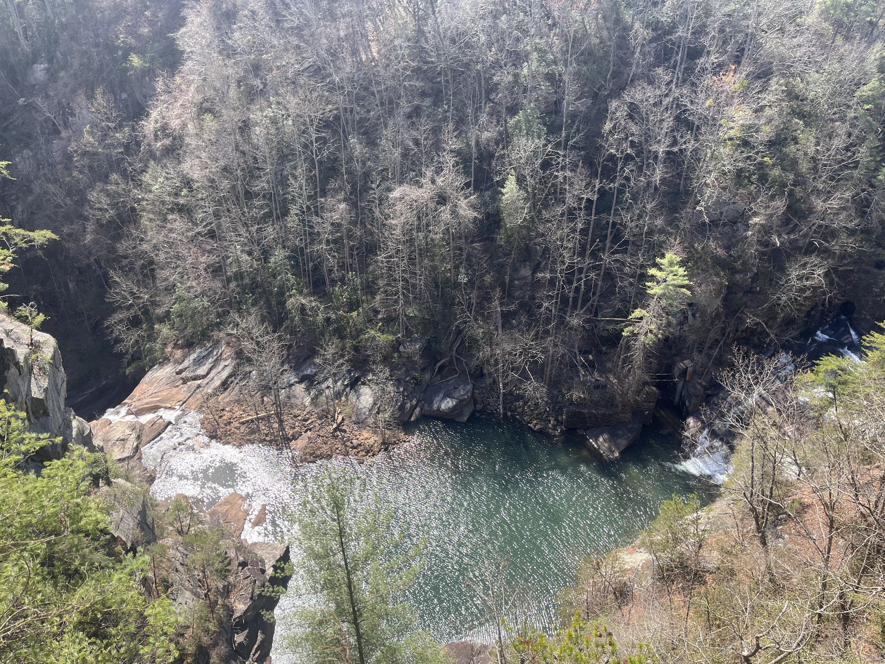

About Me!
I am a mathematician and engineer.
Some of my skills include Python, SQL, and R
Hi! My name is Juliet Mitchell. I am a mathematician and Engineer with a very diverse background. As an undergraduate student at the University of South Alabama, I completed a double major in Mathematics & Statistics and Physics. I was heavily involved on campus earning multiple fellowships including a fulltime scholarship and multiple summer research fellowships. I completed several research projects in the Physics department with Dr. Jianing Han. Most of this work included data collection and analysis for our experiments using Excel. Some of these projects I owned independently through design and construction to the final report. Two of these projects led to published research including one paper. I was also the president of the Society of Physics Students. After graduation, I stayed at South to begin a Masters in Mathematics but ended up receiving a job offer at the end of my second year from Xplore, inc, a small space startup in Redmond, Washington! At Xplore, I was employed as a GN&C (Guidance, Navigation, and Control) Engineer, but since this was a startup, I wore many hats and ended up working on many teams and various projects throughout my year at the company. Much of the work I completed in this role included coding in Python creating flight software simulations using pandas and matplotlib. After a year at the company, I decided I wanted to finish my Masters degree, so I returned to South and finished my degree, completing a thesis involving a project attempting to solve a Graph Theory problem. I then headed to Emory to begin a PhD in Computational Mathematics. I ended up leaving the PhD program and took some personal time. I am now ready to find the right team I can share my skills with!
I am 50/50 analytical and creative, so I enjoy roles that foster my creativity and natural curiosity and allow me to also think in a quantitative manner. I love having a problem to solve and I love working either independently or on a strong team to do so! I am a self-starter and highly motivated to complete projects in a thorough and timely manner.
